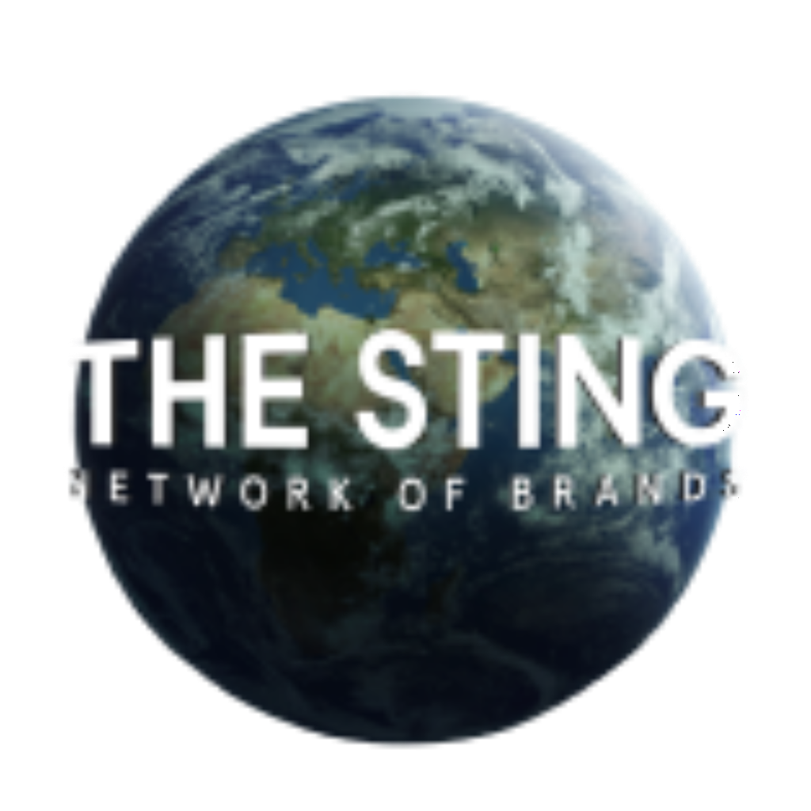
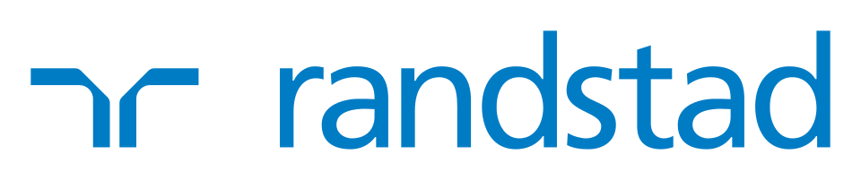
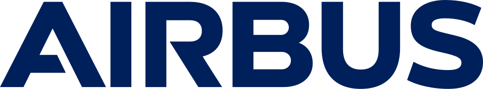
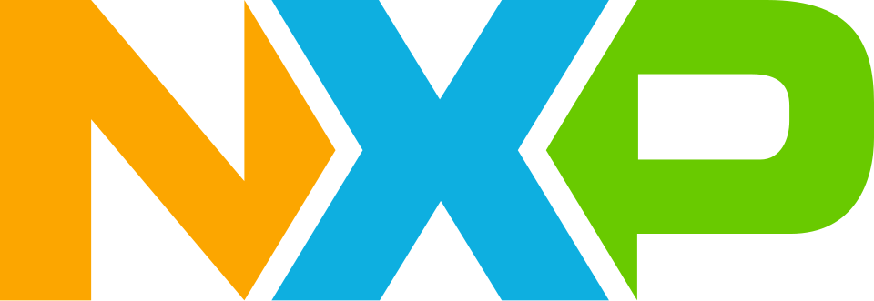
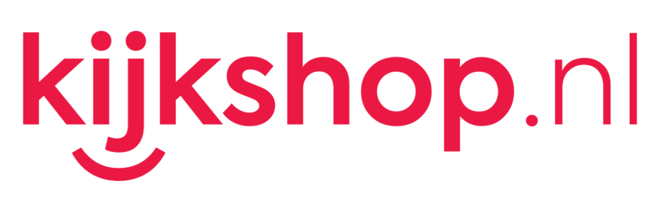
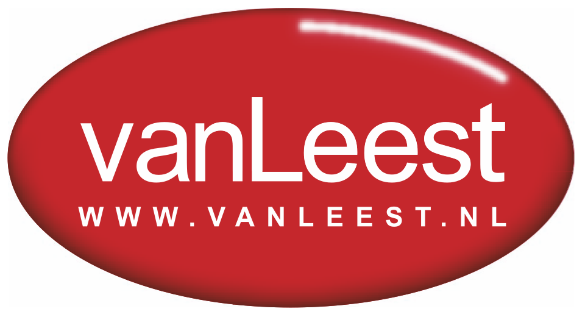
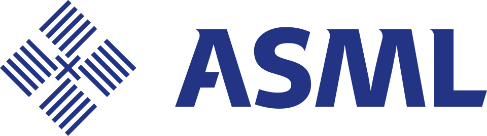
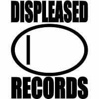

네덜란드 브랜드 53
네덜란드에서 시작한 브랜드 53개를 로고와 함께 모았습니다. 대표적인 네덜란드 브랜드로는 스카이팀(SkyTeam), 스텔란티스(Stellantis), ASML Holding, NXP 반도체(NXP Semiconductors), 로드러너 레코드(Roadrunner Records), 하이네켄(Heineken) 등이 있습니다. 수록 기준은 검수된 브랜드 설명이나 공식 웹사이트가 일치하는 위키데이터 개체에서 기원 국가가 확인된 경우로 한정했습니다.
다른 국가 보기
국가별 전체 →산업별로는 식음료 11개, 리테일·커머스 11개, 모빌리티 5개, 홈·라이프스타일 4개 순입니다. 설립연도가 확인된 브랜드는 46개이며 가장 오래된 곳은 1800년, 가장 최근은 2021년에 시작했습니다. 시기별로는 1900년 이전 10개, 1900~1949년 7개, 1950~1999년 22개, 2000년 이후 7개입니다. 수록 자료로는 로고 이미지 52개, 로고 변천 자료 6개, 연혁 타임라인 2개를 갖췄습니다. 이 가운데 45개는 공식 웹사이트가 일치하는 위키데이터 개체로 연결해 두었습니다.
산업별 네덜란드 브랜드
네덜란드 식음료 브랜드 11
네덜란드 브랜드 목록
 하이네켄Heineken네덜란드 · 1864년
하이네켄Heineken네덜란드 · 1864년하이네켄(Heineken)은 1864년 네덜란드 암스테르담에서 창립된 하이네켄 N.V.의 플래그십 페일 라거 맥주 브랜드이다.
멕스Mexx네덜란드 · 1986년멕스(Mexx)는 1986년 네덜란드에서 라탄 차다가 설립한 캐주얼 패션 브랜드이다.
스합 엔 시트론Schaap en Citroen네덜란드 · 2009년스합 엔 시트론(Schaap en Citroen)은 네덜란드의 주얼리·다이아몬드·시계 소매 기업이다.
 제만Zeeman네덜란드 · 1967년
제만Zeeman네덜란드 · 1967년제만(Zeeman)은 네덜란드의 할인 의류·섬유 소매 체인이다.
 헤마HEMA네덜란드 · 1926년
헤마HEMA네덜란드 · 1926년헤마(HEMA)는 1926년 네덜란드 암스테르담에서 설립된 생활용품·의류·식품 등을 취급하는 종합 잡화점 체인이다.
 프락시스Praxis네덜란드 · 1978년
프락시스Praxis네덜란드 · 1978년프락시스(Praxis)는 1978년 네덜란드에서 시작된, Maxeda DIY 그룹 소속의 DIY 홈임프루브먼트 대형소매 체인이다.
 비브라Wibra네덜란드 · 1956년
비브라Wibra네덜란드 · 1956년비브라(Wibra)는 네덜란드·벨기에에서 영업하는 할인 소매 체인이다.
 더 소사이어티 샵The Society Shop네덜란드 · 1935년
더 소사이어티 샵The Society Shop네덜란드 · 1935년더 소사이어티 샵(The Society Shop)은 네덜란드의 남성복 브랜드이자 소매기업이다.

더 스팅The Sting네덜란드 · 1982년더 스팅(The Sting)은 네덜란드의 대형 패션 소매기업이다.
 훈케묄러Hunkemöller네덜란드 · 1886년
훈케묄러Hunkemöller네덜란드 · 1886년훈케묄러(Hunkemöller)는 1886년 네덜란드 암스테르담에서 창립된 란제리 전문 리테일러이다.
 ING 그룹ING Group네덜란드 · 1991년
ING 그룹ING Group네덜란드 · 1991년ING 그룹(ING Group)은 암스테르담에 본사를 둔 네덜란드의 다국적 은행·금융 서비스 기업이다.
 시몬 레벨트Simon Lévelt네덜란드 · 1826년
시몬 레벨트Simon Lévelt네덜란드 · 1826년시몬 레벨트(Simon Lévelt)는 6대째 가족이 운영하는 네덜란드의 커피 로스팅·차 블렌딩 전문 기업이다.
 돈커부트Donkervoort네덜란드 · 1978년
돈커부트Donkervoort네덜란드 · 1978년돈커부트(Donkervoort)는 네덜란드 렐리스타트에 본사를 둔, 수작업으로 제작하는 초경량 스포츠카 제조업체이다.

란트스타트Randstad N.V.네덜란드 · 1960년란트스타트(Randstad N.V.)는 네덜란드 Diemen에 본사를 둔 다국적 인적자원 컨설팅 기업이다.
 스카이팀SkyTeam네덜란드 · 2000년
스카이팀SkyTeam네덜란드 · 2000년스카이팀(SkyTeam)은 2000년 6월 22일에 설립된 항공 동맹이다.
 스파Spar네덜란드 · 1932년
스파Spar네덜란드 · 1932년스파(Spar)는 1932년 네덜란드에서 Adriaan van Well이 설립한 다국적 기업으로, 독립 운영되는 식료품 소매점에 브랜드와…
 스파이커 자동차Spyker Cars네덜란드 · 1999년
스파이커 자동차Spyker Cars네덜란드 · 1999년스파이커 자동차(Spyker Cars)는 1999년에 설립된 네덜란드의 스포츠카 브랜드이다.
 그롤쉬Grolsch네덜란드
그롤쉬Grolsch네덜란드그롤쉬(Grolsch)는 1615년 Willem Neerfeldt가 Groenlo에서 설립한 네덜란드의 맥주 양조회사이다.

에어버스Airbus네덜란드 · 1998년에어버스(Airbus)는 프랑스, 독일, 영국, 스페인, 네덜란드의 다국적 항공기업이다.
북킹닷컴booking.com네덜란드 · 1996년북킹닷컴(Booking.com)은 네덜란드 암스테르담에 본사를 둔 온라인 여행사이다.
 트랜스아비아Transavia네덜란드 · 1965년
트랜스아비아Transavia네덜란드 · 1965년트랜스아비아(Transavia)는 네덜란드의 저비용 항공사이다.
 암스텔Amstel Brewery네덜란드 · 1870년
암스텔Amstel Brewery네덜란드 · 1870년암스텔(Amstel Brewery)은 1870년 암스테르담에서 설립된 네덜란드의 맥주 양조회사이자 맥주 브랜드이다.
 스텔란티스Stellantis네덜란드 · 2021년
스텔란티스Stellantis네덜란드 · 2021년스텔란티스(Stellantis)는 그루프 PSA와 Fiat Chrysler Automobiles가 합병해 2021년 설립한 네덜란드의 다국적…
 엘제비어Elsevier네덜란드 · 1880년
엘제비어Elsevier네덜란드 · 1880년엘제비어(Elsevier)는 과학·기술·의학 분야의 콘텐츠를 전문으로 하는 네덜란드의 학술 출판사이다.
 DAF 트럭DAF네덜란드 · 1928년
DAF 트럭DAF네덜란드 · 1928년DAF 트럭(DAF)은 1928년 네덜란드에서 설립된 자동차 제조사로, 본사는 에인트호번에 있으며 현재 파카 그룹을 모기업으로 두고 있다.
 아디옌Adyen네덜란드 · 2006년
아디옌Adyen네덜란드 · 2006년아디옌(Adyen)은 네덜란드 암스테르담에 본사를 둔 글로벌 결제 플랫폼 기업이다.
암스테르담 국립미술관Rijksmuseum네덜란드 · 1800년암스테르담 국립미술관(Rijksmuseum)은 네덜란드의 국립박물관으로, 암스테르담에 위치한다.
 네비우스 그룹Nebius Group네덜란드 · 2004년
네비우스 그룹Nebius Group네덜란드 · 2004년네비우스 그룹(Nebius Group)은 대규모 GPU 클러스터와 클라우드 인프라를 기반으로 AI 및 머신러닝 인프라를 제공하는 네덜란드 기술…

NXP 반도체NXP Semiconductors네덜란드 · 1953년NXP 반도체(NXP Semiconductors)는 필립스의 반도체 부문에서 분리된 네덜란드의 비메모리 반도체 기업이다.
 아홀드 델레이즈Ahold Delhaize네덜란드 · 2016년
아홀드 델레이즈Ahold Delhaize네덜란드 · 2016년아홀드 델레이즈(Ahold Delhaize)는 네덜란드와 벨기에를 기반으로 하는 다국적 소매 및 도매 지주회사이다.
 로열 탈렌스Talens네덜란드 · 1899년
로열 탈렌스Talens네덜란드 · 1899년로열 탈렌스(Royal Talens)는 1899년 네덜란드에서 설립된 미술·드로잉 용품 제조 브랜드이다.
 로드러너 레코드Roadrunner Records네덜란드 · 1980년
로드러너 레코드Roadrunner Records네덜란드 · 1980년로드러너 레코드(Roadrunner Records)는 1980년 Cees Wessels가 네덜란드에서 설립한(초기명 Roadracer)…
 콴툼Kwantum네덜란드 · 1976년
콴툼Kwantum네덜란드 · 1976년콴툼(Kwantum)은 1976년 시작한 네덜란드의 홈·인테리어 할인 소매 체인이다.
 아르마다 뮤직Armada Music네덜란드 · 2003년
아르마다 뮤직Armada Music네덜란드 · 2003년아르마다 뮤직(Armada Music)은 2003년 아민 반 뷰렌 등이 설립한 네덜란드의 독립 일렉트로닉 댄스 음악 레이블이다.

케이크숍Kijkshop네덜란드 · 1973년케이크숍(Kijkshop)은 1973년 네덜란드에서 시작한 카탈로그·쇼룸형 소매 체인이었다.
벨컴퍼니BelCompany네덜란드벨컴퍼니(BelCompany)는 네덜란드의 통신·휴대폰 소매 체인이었다.
 KLM네덜란드 · 1919년
KLM네덜란드 · 1919년KLM은 1919년 10월 7일 네덜란드에서 설립된 항공사로, 정식 명칭은 코닌클레이커 루흐트파르트 마트스하페이(왕립 항공회사)다.

Van Leest네덜란드Van Leest는 네덜란드의 리테일·커머스 브랜드로, 상품 큐레이션, 가격 체계, 매장·온라인 유통, 구매 편의성이 브랜드 인식을 좌우하는…
 ABN AMRO네덜란드 · 1991년
ABN AMRO네덜란드 · 1991년ABN AMRO는 암스테르담에 본사를 둔 네덜란드의 은행이다.

ASML Holding네덜란드 · 1984년ASML(ASML Holding)은 반도체 제조용 광학 노광 공정 장치를 만드는 네덜란드 다국적 기업이다.
 KPN네덜란드 · 1989년
KPN네덜란드 · 1989년KPN은 네덜란드의 통신 기업이다.
 LyondellBasell네덜란드 · 1985년
LyondellBasell네덜란드 · 1985년LyondellBasell은 네덜란드에 법인을 두고 휴스턴에 미국 사업 본부를 둔 다국적 화학회사이다.
 Oranjeboom네덜란드
Oranjeboom네덜란드Oranjeboom은 1671년 네덜란드 로테르담에서 설립된 맥주 양조장이자 맥주 브랜드이다.
 Alfa Brewery네덜란드 · 1870년
Alfa Brewery네덜란드 · 1870년Alfa Brewery는 네덜란드 Schinnen에 있는 가족 소유의 독립 양조장이다.
 Jopen네덜란드 · 1992년
Jopen네덜란드 · 1992년Jopen은 네덜란드 하를럼의 맥주 양조장 브랜드이다.
 Ferrovial네덜란드 · 1952년
Ferrovial네덜란드 · 1952년Ferrovial은 고속도로·공항·건설과 모빌리티·에너지 인프라를 아우르며 20개가 넘는 국가에서 교통 및 이동 인프라 사업을 운영하는 다국적…
 Budelse Brouwerij네덜란드 · 1870년
Budelse Brouwerij네덜란드 · 1870년Budelse Brouwerij는 네덜란드 노르트브라반트주 Budel에 있는 양조장이다.
 Dommelsch Brewery네덜란드
Dommelsch Brewery네덜란드Dommelsch Brewery는 1744년 네덜란드의 마을 Dommelen에서 설립된 양조장이다.
전체 목록

Displeased RecordsDispleased Records는 네덜란드의 미디어·엔터테인먼트 브랜드로, 콘텐츠 포맷, 팬덤, 채널 운영, 지식재산권 확장이 함께 작동하는 영역입니다.